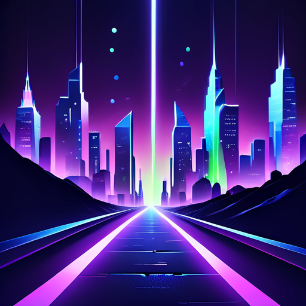
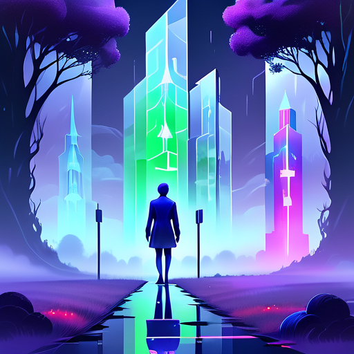

"What if you had stayed instead of left?"
What if you could see every version of yourself?
Same cautious approach, 5 years earlier. One failed venture, faster learning. By 30, second company has product-market fit.
Early start compounds. Meet the right co-founder at 26. By 30, raised a seed round. 3 years ahead of where you actually are.
Without corporate experience to fall back on, first failure hits harder. Burn savings, isolate. 2-year spiral before recovery.
| Capability | Hello E World | ChatGPT | MBTI/Big5 | Therapy Apps | Track 2 Avg |
|---|---|---|---|---|---|
| Personality model from conversation | 16-dim | — | — | — | — |
| Parallel life path simulation | 3 paths | — | — | — | — |
| What-if scenario engine | Yes | — | — | — | — |
| Local GPU inference (no cloud) | W7900 | — | N/A | — | ~40% |
| Agent memory (cross-turn) | Yes | — | N/A | — | ~60% |
| Tool calling | Yes | — | N/A | — | ~50% |
| Cognitive bias detection | Yes | — | — | — | — |
| Blind spot analysis | Yes | — | — | — | — |
| Streaming output (SSE) | Yes | Yes | N/A | — | ~30% |
| Zero data leaves device | Yes | — | Yes | — | ~40% |
flowchart TB
subgraph Browser["Browser (index.html)"]
UI["Chat UI · One question at a time\nDark theme · Sidebar state\nDemo mode · Web Audio ambient"]
end
subgraph API["FastAPI Server (port 8080)"]
INT["Interviewer Module\nAdaptive follow-up questions"]
EXT["Persona Extractor\n16-dimension JSON profile"]
SIM["What-If Simulator\n3 parallel paths + bias analysis"]
MEM["Session Memory\nQ&A history · Profile cache"]
end
subgraph GPU["AMD Radeon Pro W7900 (48GB)"]
VLLM["vLLM Server (port 8000)\nQwen2.5-14B-Instruct\nROCm 7.2.1 · gfx1100"]
end
subgraph Local["Local Storage"]
DB["All data stays on this machine\nNo cloud · No API keys"]
end
UI <-->|"HTTP REST + SSE"| INT
INT --> EXT
EXT --> SIM
INT & EXT & SIM -->|"httpx OpenAI-compatible"| VLLM
INT & EXT & SIM --> MEM
MEM --> DB
POST /personality/extractPOST /simulateGET /simulate/stream (SSE)GET /health reports GPU status
| Risk Tolerance | low / medium / high |
| Decision Style | analytical / intuitive / social / avoidant |
| Value Ranking | top 5 values, ordered |
| Strengths | 3-5 identified |
| Weaknesses | 3-5 identified |
| Cognitive Biases | 2-4 patterns detected |
| Blind Spots | 2-3 things they don't see |
| Overconfidence | 1-3 areas overestimated |
| Narrative Summary | 3-4 sentence psychographic |
| Per-Scenario Bias | Re-analyzed for each what-if |
PersonalityProfile dataclass to injected into simulation prompts. All on local GPU, under 15 seconds.
| GPU | AMD Radeon Pro W7900 |
| VRAM | 48 GB GDDR6 |
| Architecture | RDNA 3 · gfx1100 |
| ROCm | 7.2.1 |
| CPU | AMD EPYC 9334 (32c) |
| OS | Ubuntu 24.04 |
| Inference | vLLM (OpenAI-compatible) |
| Model | Qwen2.5-14B-Instruct |
| PyTorch | 2.10.0+rocm7.0 |
| Backend | FastAPI + uvicorn |
| Frontend | Vanilla HTML/CSS/JS |
| HTTP Client | httpx (async) |
vllm serve Qwen2.5-14B-Instruct --host 0.0.0.0 --port 8000 --max-model-len 8192 --gpu-memory-utilization 0.90--index-url https://download.pytorch.org/whl/rocm7.0. Not the default CUDA version.| Model | VRAM (bf16) | W7900 Fit | CN+EN Quality | Inference Speed |
|---|---|---|---|---|
| Qwen2.5-14B-Instruct | ~28 GB | 20GB headroom | Excellent | 40-60 tok/s |
| Qwen2.5-7B-Instruct | ~15 GB | Fits easily | Good | 60-80 tok/s |
| Qwen2.5-32B-Instruct | ~64 GB | Exceeds 48GB | Superior | N/A |
| Llama3.3-70B | ~140 GB | Way too large | Excellent | N/A |
| DeepSeek-V3 (671B MoE) | ~1.3 TB | Impossible | Best | N/A |
pip install vllm — auto-uninstalls ROCm torch, installs CUDA torch. Must use --no-depsrocm-smi shows W7900 active. torch.cuda.is_available() returns True. torch.cuda.get_device_name(0) returns AMD Radeon Graphics.
rocm-smi and vLLM boot logs on the actual server (36.150.116.206:31285). Not estimated. Measured.
torch.cuda.is_available() = True, get_device_name = AMD Radeon Graphics| Criterion | Requirement | Hello E World | Evidence |
|---|---|---|---|
| Local Deployment | Full GPU inference, no API | Yes | vLLM + Qwen2.5-14B on W7900 |
| Agent Properties | Memory / Planning / Tool Calling | All 3 | Q&A history · 3-path planning · extraction/sim APIs |
| Tool Calling | Real function calls | Yes | /personality/extract · /simulate · SSE stream |
| Privacy | Data stays local | Yes | 0 external API calls · localhost only |
| Practicality | Solves real problem | Yes | Decision support · career/life planning |
| Demo | Working demonstration | Yes | Demo button · 90s full flow · SSE streaming |
| GPU Evidence | Proof of GPU usage | Yes | rocm-smi · vLLM boot log · torch.cuda |
| Code Quality | Clean, documented | Yes | 8 Python modules · README · PROJECT_SPEC · docs/ |
| Reproducibility | Others can run it | Yes | requirements.txt · Quick Start · Deployment steps |
| Innovation | Unique approach | Yes | 0 competitors in personality-driven what-if simulation |
rocm-smi shows the W7900. torch.cuda.is_available() = True. torch.cuda.get_device_name(0) = "AMD Radeon Graphics". vLLM boot log shows VRAM allocation. We also have GET /health endpoint that reports GPU status at runtime.
See every version of yourself.
Track 2 — Private AI Agent — Local Deployment
AMD Radeon Pro W7900 · 48GB · ROCm 7.2.1 · vLLM · Qwen2.5-14B-Instruct
github.com/west-liu/Radeon-hackathon-2026-07